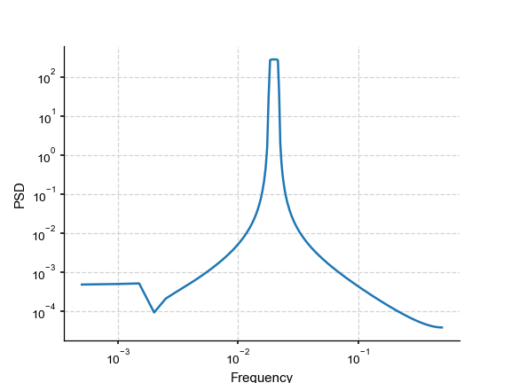

mtm (pyleoclim.utils.mtm)¶
-
pyleoclim.utils.mtm(ys, ts, NW=None, BW=None, detrend=None, params=['default', 4, 0, 1], gaussianize=False, standardize=True, adaptive=False, jackknife=True, low_bias=True, sides='default', nfft=None)[source]¶ Retuns spectral density using a multi-taper method.
Based on the function in the time series analysis for neuroscience toolbox: http://nipy.org/nitime/api/generated/nitime.algorithms.spectral.html
- Parameters
ys (array) – a time series
ts (array) – time axis of the time series
NW (float) – The normalized half-bandwidth of the data tapers, indicating a multiple of the fundamental frequency of the DFT (Fs/N). Common choices are n/2, for n >= 4.
BW (float) – The sampling-relative bandwidth of the data tapers
detrend (str) –
- If None, no detrending is applied. Available detrending methods:
None - no detrending will be applied (default);
linear - a linear least-squares fit to ys is subtracted;
constant - the mean of ys is subtracted
savitzy-golay - ys is filtered using the Savitzky-Golay filters and the resulting filtered series is subtracted from y.
emd - Empirical mode decomposition
- paramslist
The paramters for the Savitzky-Golay filters. The first parameter corresponds to the window size (default it set to half of the data) while the second parameter correspond to the order of the filter (default is 4). The third parameter is the order of the derivative (the default is zero, which means only smoothing.)
- gaussianizebool
If True, gaussianizes the timeseries
- standardizebool
If True, standardizes the timeseries
- adaptive{True/False}
Use an adaptive weighting routine to combine the PSD estimates of different tapers.
- jackknife{True/False}
Use the jackknife method to make an estimate of the PSD variance at each point.
- low_bias{True/False}
Rather than use 2NW tapers, only use the tapers that have better than 90% spectral concentration within the bandwidth (still using a maximum of 2NW tapers)
- sidesstr (optional) [ ‘default’ | ‘onesided’ | ‘twosided’ ]
This determines which sides of the spectrum to return. For complex-valued inputs, the default is two-sided, for real-valued inputs, default is one-sided Indicates whether to return a one-sided or two-sided
- Returns
res_dict – the result dictionary, including - freq (array): the frequency vector - psd (array): the spectral density vector
- Return type
dict
See also
periodogram()Estimate power spectral density using a periodogram
welch()Retuns spectral density using the welch method
lomb_scargle()Return the computed periodogram using lomb-scargle algorithm
wwz_psd()Return the psd of a timeseries using wwz method.
Examples
>>> from pyleoclim import utils >>> import matplotlib.pyplot as plt >>> import numpy as np >>> # Create a signal >>> time = np.arange(2001) >>> f = 1/50 >>> signal = np.cos(2*np.pi*f*time) >>> # Spectral Analysis >>> res = utils.mtm(signal, time) >>> # plot >>> fig = plt.loglog( ... res['freq'], ... res['psd']) >>> plt.xlabel('Frequency') >>> plt.ylabel('PSD') >>> plt.show()
(Source code, png)

{kind=link}